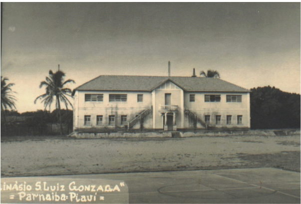

Ginásio São Luiz Gonzaga
Parnaíba - educação e cidadania
O Ginásio São Luiz Gonzaga formou gerações de estudantes e aparece nos postais como símbolo de educação e modernização. Sua arquitetura e presença urbana ajudam a contar a história de uma Parnaíba que investia em ensino e em novas oportunidades.
Na memória afetiva da cidade, o ginásio representa encontros, descobertas e a construção de laços comunitários que extrapolam as salas de aula.
Imagens relacionadas


Antes e Depois
Compare o postal histórico com o registro atual (placeholder).
